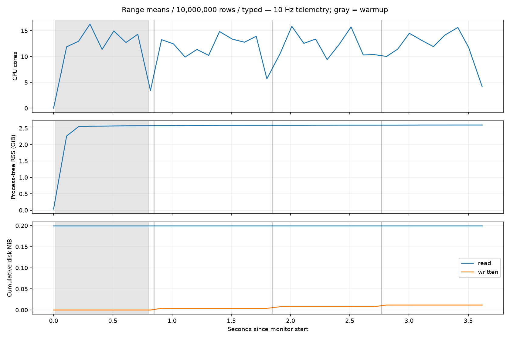
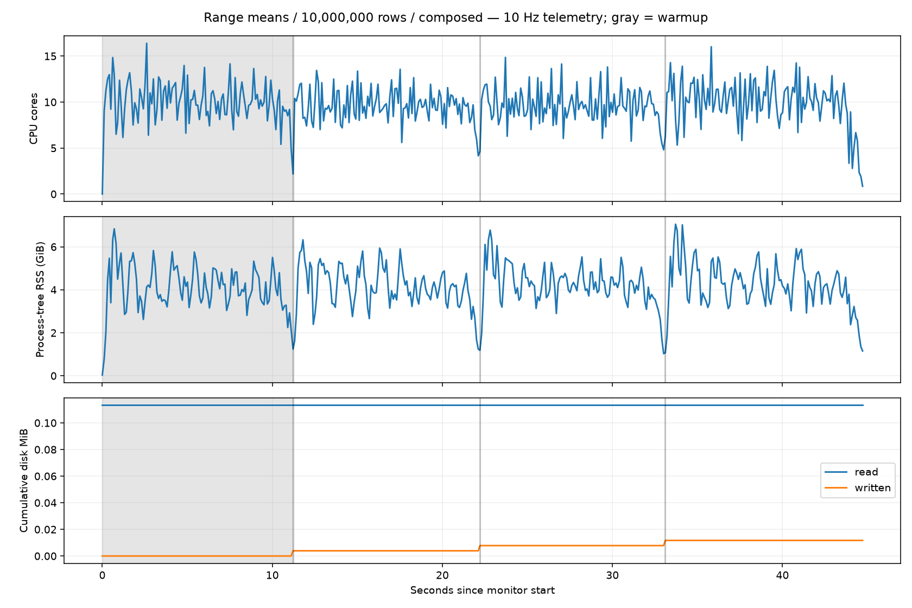
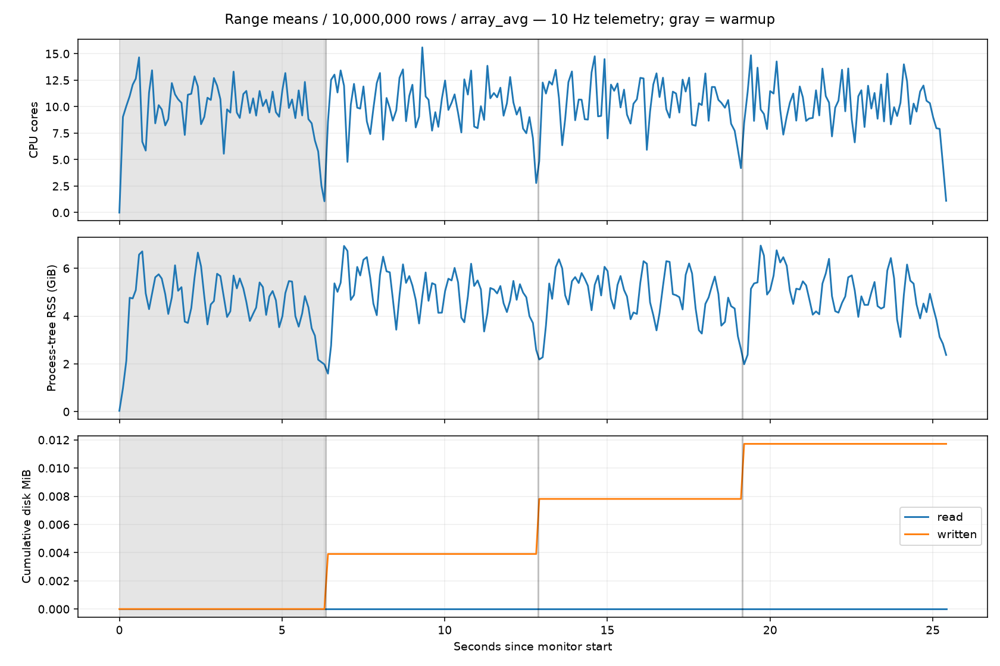

Same local 14-core Apple Silicon machine. One warmup, three measured iterations, medians below. Stock Hail 0.2.139 uses Spark local[14] and a 16 GiB JVM heap. Vail variants use the same release native binary. Runs are sequential; no compilation ran during measured queries.
| Implementation | Wall seconds | Core-seconds | Average cores (median) | Peak RSS GiB |
|---|---|---|---|---|
| hail | 0.488 | 3.89 | 8.03 | 0.92 |
| composed | 10.942 | 105.20 | 9.62 | 7.05 |
| array_avg | 6.286 | 65.81 | 10.17 | 6.95 |
| Vail typed range + mean | 0.896 | 11.11 | 12.41 | 2.60 |
Core-seconds include the worker and live descendants, including Hail’s JVM, and the in-process telemetry monitor. Profiles use 500 Hz sampling. These are warm local measurements, not the earlier cloud/cold results. Raw array_avg returns null for empty arrays; Hail and the composed expression return NaN. The exact upstream action is _force_count(), so this comparison does not consume the annotation values.
The implemented DataFusion UDFs generate Int32 range values directly and reduce original numeric buffers into Float64 results. There are no intermediate full-array numeric casts or filtered child arrays. The updated run passed 88 Rust execution tests and 95 Python regressions. Median wall time is 0.896s and CPU time is 11.11 core-seconds, versus the earlier composed implementation’s 10.942s and 105.20 core-seconds. The updated plan contains vail_array_mean(vail_range_int32(...)). This still materializes range values; it is not a closed-form range-mean rewrite.

Updated native profile · 10 Hz metrics · DataFusion plan
Direct DataFusion array_avg is faster than the composed mean. The earlier contrary conclusion was unsupported. In the composed profile, range generation accounts for 31.8% of sampled leaf CPU, Int64-to-Int32 casting 26.2%, memory zeroing 24.7%, Int32-to-Float64 casting 3.7%, and the Arrow sum kernel 0.8%. In the array_avg profile: zeroing 31.3%, range generation 26.3%, Int64-to-Int32 casting 21.7%, array_avg 5.7%, and Int32-to-Float64 casting 5.1%. Most CPU goes to range materialization and conversion, not reduction.
Hail process-tree CPU counters include its JVM. Samply’s launched-process capture did not follow the JVM, so its saved Python-only profile is not a useful Hail execution profile and is not shown here.
Native profile · 10 Hz metrics · Iterations

Native profile · 10 Hz metrics · Iterations
